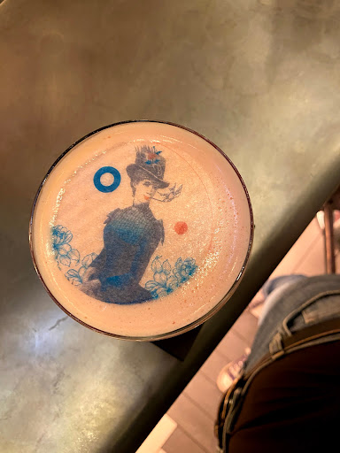
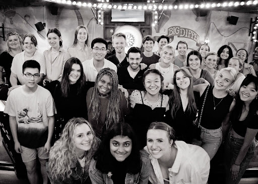
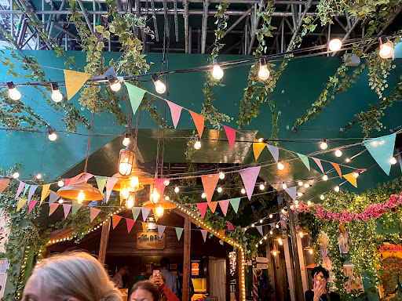
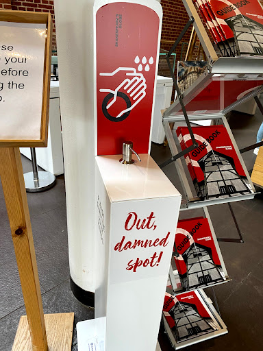
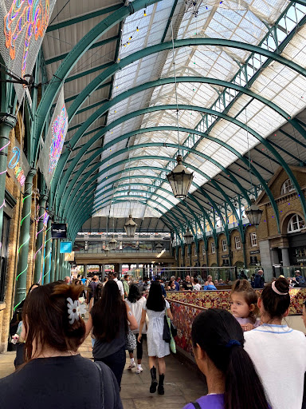
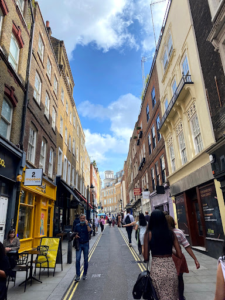
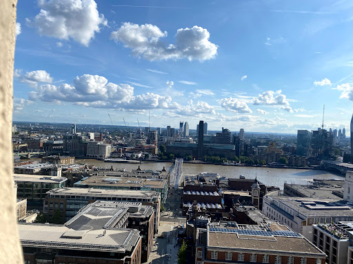
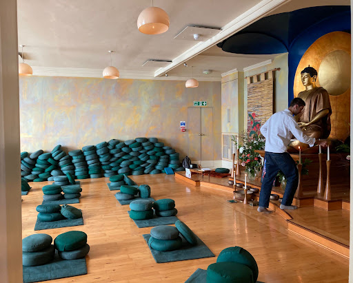
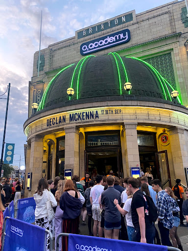
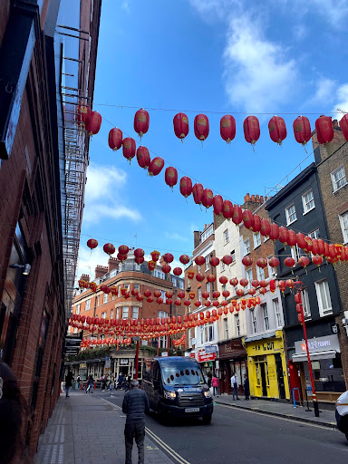

A week (and a bit) have gone by in London and I have so much to share!
First things first, I am very sorry that I have failed to keep y'all updated. My mom has been yelling at me the past few days about posting, oops! I've been busy making memories and doing homework. I had a 2,000-word essay due today that I was working on all weekend, and that took up most of my time. But so much has happened!
I left off last time with very little to report. I had arrived in London, unpacked, and was going through orientation. Later that night, all of the students from my program went to play darts and get dinner at a place called the "Flight Club" (fLight, not fight, as I originally thought... was a little weary until I payed attention to the title). Since I am of legal drinking age in the UK, I bought myself a cocktail, which had a really cool picture set on the top of it.

The club was a lot of fun, and really cool inside. I'll include some pictures of the place, as well as the people from my program and the other London students below:

The next day (Saturday), I went on a program-sponsored tour of London. We were all over the place, from Westminster Abbey to the Shakespeare Globe to Borough Market. I've been keeping track of how many steps I get per day using my FitBit, and on Saturday I racked up 26,000 steps.
An interesting little tidbit from our tour: apparently, the actual city of London is only about 1 square mile, and everything else that is considered "London" is actually the City of Westminster. There was a wall built up at one point around just London, so the actual city is technically very small. I found that incredibly interesting!
We ended our tour in Borough market at got lunch. The market itself is quite bustling and full of different kinds of cuisine, from Mexican to Middle Eastern to Japanese. It also had loads of fine cheeses, breads, teas, and other delicacies. Here are photos from the tour (notice the "out damned spot!" hand sanitizer from the Shakespeare Globe. I thought it was funny):
  
From Borough Market, a group of us decided to visit St. Paul's Cathedral, which was absolutely gorgeous. We were able to walk to the top of it and got a great view of London. It was 528 steps all the way to the top (remember when I said I walked 26,000 steps? Yeah, this is the culprit), but it was well worth it when we saw that view.

Last Sunday was more of a relaxed day. A few friends and I went to brunch at a cute place called The Lion and the Unicorn, where we embarrassed ourselves by asking for Ranch dressing, to which our waiter asked if he could pull out his phone to google what that even is before telling us that they didn't have it. Figures. I knew that Ranch wasn't popular in the UK but I didn't expect to not be able to find it at all, but I guess I'll have to adapt. After lunch, we shopped around a bit for stationary before classes began the next day, and figured out where exactly in the city we'd be taking our class. It's a cool little place right across from the British Museum.
Monday, my class started! I am taking a supplemental tutorial via my program for three weeks to get myself acquainted with the academic rigor that I'll be experiencing whilst in Oxford, as well as to make sure I have enough credits before returning to Knox. The class that I'm taking is called Representations of Identity, Nation, and Values in British Cinema. It is a deep-dive into the way in which British films create as well as reflect their culture, and how identity is defined through national cinema. We began the class by reading about what exactly defines a film's nationality, and found out that it's a lot more complicated than it seems. For example, the Harry Potter franchise, while about British characters using British actors and taking place in England, is actually an American film because it was made using American money (Warner Bros. is an American company). On the flip side, the film Gravity, starring Sandra Bullock and George Clooney? It's considered British. In fact, it won the BAFTA for Best British Film. The reason is that it was made from a British production company, with a resident of Britain as its director, using British money. How crazy is that? We also began a lesson on semiotic film theory, which is basically the use of mise-en-scene (what actually makes up a scene) as well as camera angles, music, etc. to convey a message through signals. It's all very complicated, and I am not good at explaining it, so we'll leave it there.
On Tuesday, I took a day to study and relax a bit. There's an adorable little coffee shop down the road called Gail's that my friends and I love. It's a great study space, and the food there is amazing. After studying, a few friends and I went to a nice Italian place, where I ordered a drink for myself with dinner for the first time (not all that exciting, I know, but it was a weird feeling).
Wednesday I had class again, and this time we talked about what a heritage film is, which is a fancy term used to define British films that are set in the past (typically pre-WWII), over-fetishize material wealth and the upper class/royalty, have a whimsical and bright aesthetic (the term my professor used was scopophilic fetishization), and often are pushed to create a feeling of nostalgia. They've been heavily criticized for being blatant propaganda at their worst and mildly entertaining at best, but a lot of this criticism seems to come from the fact that these are films that women and queer people are specifically interested in (hmmm, another case of women and queer people not being able to enjoy things...... but I'll get off my soapbox). We watched The King's Speech as an example of a heritage film that kind of breaks the standard, as the film is definitely not glorifying the royal family in the way that is typically done with this genre of film (but does it still glorify the royal family??? You'd have to read my essay on the film to hear my thoughts on that). I really did enjoy the film, I think it was beautifully made with a lot of really cool analysis to be done. Later that night, a few of my friends and I went to a pub (called The Oxford Tavern because we can't get over the fact that we'll be Oxford students in a couple of weeks), had a couple of drinks and hung out. It was a wonderful way to spend the evening.
On Thursday, I just went shopping with a few people and bought some cheap clothes, not much!
Friday, my friend and I ventured into SoHo to get our hair cut. I wanted a different style, so I went for a classic shag to even out my bangs and get an edgier look. I would post a picture but I don't have any good ones and I am certainly not taking a picture right now as I am sitting in bed with greasy hair wearing my Diary of a Wimpy Kid t-shirt, so I am not currently prepared for public viewing. Anyways, I sat in a cute little park across from the salon to read while I waited for my friend to get her haircut, and it was so nice to be able to just sit on a bench on a beautiful day, reading while surrounded by other people doing their daily to-dos. There's something really wonderful about that, I don't know how to describe it. Later in the evening my friends and I went to a Pho restaurant (very good, but my chopstick skills are definitely not up to standard) and spent the night "studying" but really talking about anything and everything until all of us were too tired to function, and called it a night.
Ok, on to Saturday (this is getting long, I'm so sorry)! I woke up at the horrific time of 8:55am (I'm a college student, don't you dare judge) and booked it downstairs just five minutes after to attend a meditation session at the London Buddhist center. We stopped by a coffee place on the way there called, and pardon my language, "Fuckoffee." I just felt the need to include that because the irony was not lost on me that we stopped by a place with such a name on the way to the BUDDHIST center to MEDITATE. Anyways, the meditation session was really quite wonderful. I've meditated before to calm my anxiety and focus on breathing, but never in a group setting led by people who actually knew what they were doing. We straddled a stack of pillows, knees and shins on the ground, palms resting on another couple of pillows in front of us, and meditated. It was really nice, and I was able to clear my head for a bit and focus on my body and my mind. They also had a little break in between meditations for tea and biscuits, which were delicious.

I studied with friends at a cafe for the afternoon, and then went to see Declan Mckenna, one of my favorite artists of all time, in concert! He was absolutely amazing and played all of my favorite songs, and put on quite a performance. The concert was comprised of, surprisingly, a lot of people much younger than my friend and I. The age demographic seemed to be around 16-18 years old, which is interesting considering Declan appears to have a much older audience in the States.

Sunday was spent working on my essay on The King's Speech and watching two more films for my class, Rocks and Fish Tank. Both are independent British films focused on girlhood within the context of the working class and, in the case of Rocks, race. They both were gritty and ultra-realistic. I'd highly recommend both of them. Michael Fassbender appears in Fish Tank, but fair warning that the film does dive into some pretty difficult subjects, specifically around predatory relationships.
That brings us to today, where I didn't do much except have class (at a movie theatre, go figure). We saw a new indie British film called A Brixton Tale, about a young white female filmmaker who takes an interest in a Black teenage male, makes him the subject of her documentary, begins a relationship with him, and then exploits him for the sake of herself and her film. It's really raw, very intense, and a great example of the power dynamics between Black men and white women. I thought it was fantastic, and I definitely recommend.
On our way to the theatre, we passed through London's China Town, which is beautiful and really busy with people!

Anyways, that's about it! I'll comment on some general things: I'm finding that I'm taking the tube way more often than I originally thought I would be. I am getting the hang of working out the train system, though, so I feel like a real local whenever I can figure out exactly how to get somewhere, so that's cool. I am seeing SO many people just walking around with dogs, which I know is common everywhere, but I wouldn't expect in a big city such as London. People are very curious about my accent. The guy in front of my friend and I in line to the concert heard us talking and asked if we were Australian (????), and upon telling him I was from Chicago (I know it's not Chicago, but most people here don't care about the distinction between the suburbs of Chicago and actual Chicago, and it's just way easier to say, mmkay?) said he thought that was in Canada, so..... Also! At my hair appointment, the receptionist noticed my last name and said "Oh! Drozdik, do you know what that means?" I explained that I have heritage from Slovakia, and that it means little bird, and she was really excited. Apparently both her and my hairdresser are Slovak, so they knew immediately the significance of my last name. She asked if I spoke any Slovak, and told me I should tell my hairdresser what I want in Slovak, but I told her I've never spoken any, that I'm not really all that connected to my heritage beyond making kolacky at Christmastime.
Again, sorry for the long post and the long wait! I will try to update a little more, so that I don't have to fit so much into one single post every time. Until next time, Cheers!